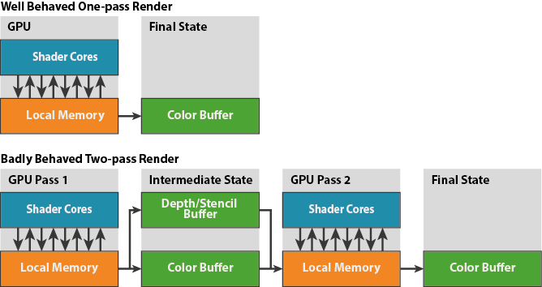

[译]Mali Performance 2: How to Correctly Handle Framebuffers
本周，我从目前为止我们一直在探索的渲染管线的以硬件为中心的视角中略微转移，看看Mali驱动程序如何将OpenGL ES API活动转换为渲染所需的硬件工作负载，更重要的是。 正如我们将要看到的，OpenGL ES在这个领域并没有特别严格的规定，因此开发人员必须小心避免一些常见的陷阱。
###Per-Render Target Rendering: Quick Recap
正如我之前的博客中描述的，Mali的硬件引擎运行在一个two-pass的渲染模型上，即在开始任何片元处理前要完成所有的几何处理。这允许我们可以把大部分工作状态存储在跟GPU紧密耦合的本地存储，把渲染需要的能耗巨大的外部DRAM访问最小化。
当正确使用OpenGL ES时，我们在本地存储可以创建、使用、丢弃大部分framebuffer data。这样就可以避免从外部存储器读取帧缓冲区或将帧缓冲区写入外部存储器，除了我们想要保留的缓冲区，例如颜色缓冲区。然而，这不是确切的行为，并且API使用的某些模式可以触发低效行为，这迫使GPU进行额外的读取和写入。
OpenGL ES : What is a Render Target？
在OpenGL ES中有两种render target：
- On-screen window render targets
- Off-screen framebuffer render targets
从概念上讲这些在OpenGL ES中非常相似；虽然不完全相同。在API级别，某一时刻只能有一个render target被激活；通过调用glBindFramebuffer(fbo_id)可以指定当前的render target，当id为0时可以用来切换会窗口的render target（也叫做默认FBO）
On-screen Render Targets
On-screen render target被EGL严格定义。一帧的渲染活动明确定义了一帧是啥，下一帧是啥；在两次调用eglSwapBuffers（）之间渲染到FBO 0的就是一帧的渲染。
此外，color、depth、 stencil buffer在context创建时就被定义了，而且配置不可变。默认情况下，color、depth、stencil的值在eglSwapBuffers（）调用后是未定义的（前一帧的值没有被保留），允许GPU驱动对缓冲区的使用做出有保证的假设
。特别是我们知道深度和模板只是临时工作数据，我们永远不需要将它们写回内存。
Off-screen Render Targets
Off-screen render target的定义不太严格。
首先，没有类似eglSwapBuffers（）的API告诉驱动应用程序完成了对一个FBO的渲染，它可以提交用来渲染了。渲染的刷新要从其他API的调用中推断。我们将在下一节中更多地了解Mali支持的推论。
其次，应用程序对附加在Color，depth，stencil上的buffer做啥我们是无法保证的。一个应用程序可能把它们当成textures使用，或者重新附加到另一个的FBO，例如重新读取一个之前的render target的depth的值作为另一个render target的初始值。默认情况下OpenGL ES会保留所有的attachments，除非通过glInvalidateFramebuffer()显示的被丢弃掉。Note：这是OpenGL ES 3.0的新接口；在OpenGL ES 2.0中可以使用glDiscardFramebufferExt()扩展，所有的Mali驱动都支持这个扩展。
Render Target Flush Inference
正常情况下，Mali 在一个render target解除绑定时flush，除非是窗口surface，它是在eglSwapBuffers()调用时flush的。
为了避免性能下降，开发者需要避免不必要的flush，那些只是最终渲染结果的一个子集的flush，所以建议您对每一个FBO每帧只绑定一次，并且一次性渲染完成。
一个良好的渲染队列应该长这样：
1 | #define ALL_BUFFERS COLOR_BUFFER_BIT | DEPTH_BUFFER_BIT | STENCIL_BUFFER_BIT |
相比之下，不好的长这样：
1 | #define ALL_BUFFERS COLOR_BUFFER_BIT | DEPTH_BUFFER_BIT | STENCIL_BUFFER_BIT |
这种行为被称为增量渲染，它强制使驱动处理一个render target两次，第一个pass需要把中间渲染状态写回memory（color，depth，stencil），第二个pass又会从memory读取，因此它可以在旧状态之上“追加”更多渲染。

如上图所示，可以看到增量渲染会多占用400%的带宽（32-bpp（bits per pixel） color和Depth24 Stencil8）跟避免了读写main memory的渲染相比。
When to call glClear？
细心的读者可能注意到我再四个frame buffer的渲染队列中插入了一些glClear调用。应用程序应该在每一个render target渲染最开始时对每一个attachment调用glClear，表明attachment之前的数据是没用的。这明确的告诉驱动我们不需要之前的状态，然后就能避免从memory读取回来，同时也能把一些未定义的buffer定义为‘clear color’。
一个常见的错误就是只clear framebuffer的一部分；例如在使用一个只覆盖部分屏幕scissor而导致只有frame buffer的一部分激活时调用glClear。我们只能在应用于整个surface时完全删除渲染状态，因此应尽可能清除整个渲染目标。
When to call glInvalidateFramebuffer?
在OpenGL ES API中为了FBO使用的效率对应用程序的最后一个要求就是告诉驱动哪个color/depth/stencil是临时数据，在当前pass渲染结束时可以被丢弃。例如，几乎每个3D渲染器都会用到color和depth，但是大部分应用程序的depth buffer都是临时的能安全的丢弃。Invalidate不需要的buffer如果失败就会导致他们写回memory，浪费带宽，提高能耗。
此时最常见的错误是将glInvalidateFramebuffer（）当成跟glClear（）一样，并在N + 1帧中首次使用该FBO时将无效调用置于帧N状态。Ť这就太晚啦！Invalidate的目的是告诉驱动这个buffer不需要被保存，所以我们需要修改产生那些buffer的那一帧提交到GPU的工作。下一帧再告诉我们它已经被处理过了。应用程序需要保证驱动在这个framebuffer flush之前知道哪些buffer是临时的。因此第N帧的临时buffer应该在unbind FBO之前调用glInvalidateFramebuffer。例如：
1 | #define ALL_BUFFERS COLOR_BUFFER_BIT | DEPTH_BUFFER_BIT | STENCIL_BUFFER_BIT |
Summary
在这篇博客中我们主要探讨了Mali驱动是如何定义render pass，影响效率的几个点，以及开发者如何调用OpenGL ES API来避免。总之，我们建议：
- 在每一帧中对每个FBO只绑定一次，一次性渲染完成。
- 在每一个FBO渲染队列的最开始调用glClear，如果attachments里面旧的值是不需要的。
- 在每个FBO渲染队列的最后，在切换到另一个FBO之前调用glInvalidateFramebuffer或glDiscardFramebufferExt，如果attachment的数据是临时的。
下一次我将讲解一个相关的话题：有效使用EGL_BUFFER_PRESERVED来保持一帧的窗口color作为下一帧的默认输入，以及对性能和带宽的影响。